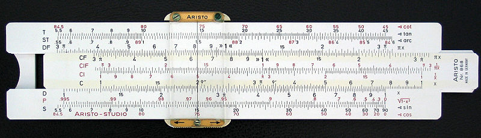
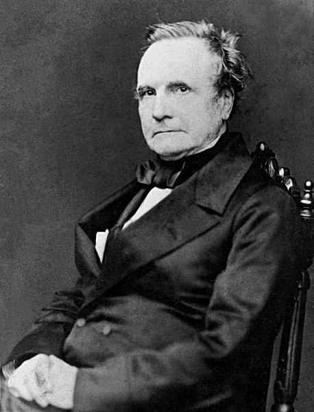
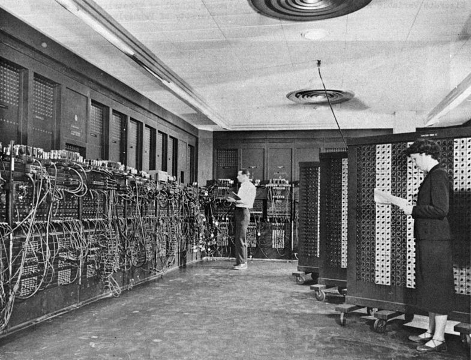

Ein Blick in die Welt des Programmierens
Vom Rechenschieber zum Smartphone
Frühe Rechenhilfen

Mechanische Rechenmaschinen

Charles Babbage (1791-1871)
Frühe Computer
Turing Machine
- Lochband
- Lese/Schreibkopf
- Register
- Instruktionstabelle
Von Neumann Architektur
- Speicher (RAM)
- Prozessor (CPU)
- (Recheineinheit, Steuereinheit, Register)
- Ein/Ausgabewerk
Was Prozesssoren tun können
- Wert aus Speicher laden
- Grundrechnungsarten
- Werte vergleichen (Bedingungen)
- Bedingt "Springen"
- Werte in Speicher schreiben
Ein simples Programm
zähler = 0
:Sprungmarke Schleifenbeginn
Speicher[1000000 + zähler] = 0
zähler = zähler + 1
Springe-Wenn zähler > (1920 * 1080 * 3); :Sprungmarke Schleifenbeginn
Erste elektronische Computer

Tyranny of Numbers
- Computer in 50ern sehr groß
- Weitere Komplexität mit Vakuumröhren etc kaum möglich (Verkabelung)
Integrated Circuits
- Ende der 50er Halbleitertechnologie entwickelt
- Ganzer Prozessor auf einem Stück Silizium, via Schablone belichtet
Moores Law
- Transistordichte verdoppelt sich ca alle 2 Jahre
- Exponentielle Kurve, vertausendfachung ca alle 20 Jahre
Netzwerke
- Erste Netzwerke in den 70er Jahren
- Ethernet & das Internet Protocol
IP Adressen
- Private vs öffentliche IP Adressen
- Z.B. 123.4.28.8
- Router die Datenpakete weiterschicken
Domain Name Server
- Router kennen (bzw sind selbst) DNS Server
- Verwandeln Domain Names wie www.google.com in IP Adressen
Ports für Anwendungen
- Z.B. Port 80 für HTTP (WWW)
- Ports wie Abteilungsnummern in Firmen
Webseiten
- HTML sind struktuierte Textdateien für Inhalt
- CSS ist Beschreibung für Aussehen (Farben, Schriften, Layout, ...)
- Javascript für Interaktion
Neue Entwicklungen
- Taktfrequenz steigt nicht mehr
- Mehrere Prozessorkerne (Gleichzeitigkeit, schwierig zu programmieren)
- Energieeffizienz sehr wichtig (Smartphones)
Software
- Maschinencode (Zahlencodes für Operationen)
- Bei den ersten Computern direkt auf Lochkarten eingegeben
- Sehr bald erste Programmiersprachen
Source Code
- Textdateien
- Jede Programmiersprache hat Compiler oder Interpreter
- Compiler übersetzt Programmiersprache im Voraus in Maschinencode
- Interpreter übersetzt Programmiersprache in Echtzeit in Maschinencode
Assembler
Statt Zahlencodes Textkürzel
Heute nur für Hardwaretreiber o.ä.
Beispiel
mov ecx, -1
.loop:
inc ecx
cmp byte [eax+ecx], 0
jne .loop
C
Maschinennahe Hochsprache
Für Betriebssysteme, zeitkritische Anwendungen
Beispiel
int i = -1;
while (i < 10)
{
i = i+1;
}
Python
Einfache aber mächtige Scriptsprache
Kleine bis mittelkomplexe Programme
Beispiel
var i = -1
while (i < 10):
i = i + 1
Abstraktion
- Hardwaretreiber
- Betriebssystem: Speichermanagement, Prozesse
- Betriebssystem: Dateien, Grafik, APIs
- Betriebssystem: Grafische Benutzeroberfläche
- APIs
Beispiel Api
Mit python eine HTML Datei aus dem Internet laden
import urllib2
response = urllib2.urlopen('http://www.danyx.com/')
html = response.read()
print html
Source code verwaltung
- Echte Programme viele hundert source code files
- Version Control Software zur Verwaltung
- Jede Änderung extra hinterlegt, kann rückgängig gemacht werden.
THE END
von Daniel Bachler
Präsentationstool reveal.js von Hakim El Hattab